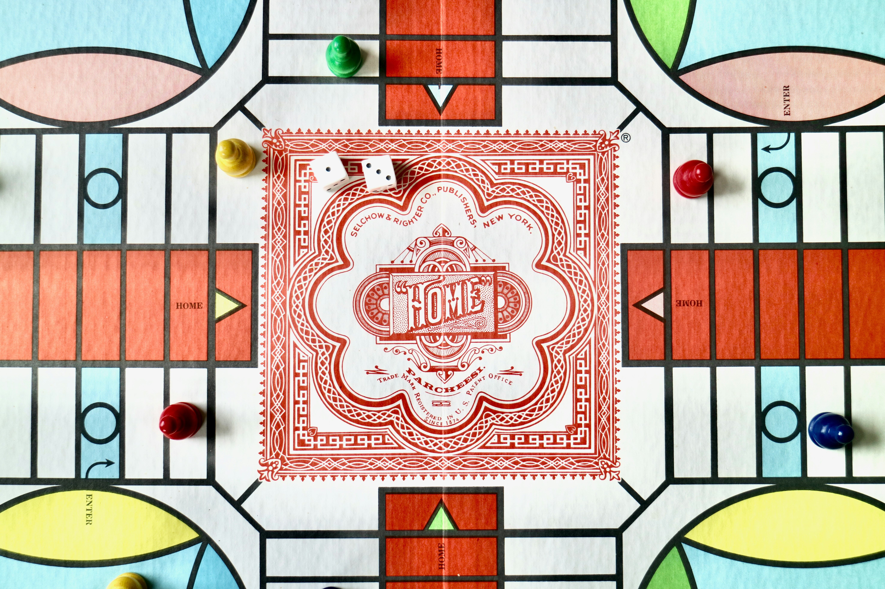

<div class="container-fluid parchis-bg">
  <div class="row justify-content-center align-items-center vh-100">
    <div class="col-md-6">
      <div class="card">
        <div class="card-body">
          <h5 class="card-title text-center mb-4">¡Bienvenido al juego Parchís!</h5>
          <div class="text-center mb-4">
            
          </div>
          <div class="d-flex justify-content-center">
            <button class="btn btn-primary btn-lg mr-3" (click)="newGame()">Nueva Partida</button>
            <button class="btn btn-success btn-lg" (click)="loadGame()">Cargar Partida</button>
          </div>
          <div class="text-right mt-3">
            <button class="btn btn-danger" (click)="logOut()">Cerrar Sesión</button>
          </div>
        </div>
      </div>
    </div>
  </div>
</div>

<!-- Modal para seleccionar una partida guardada -->
<div *ngIf="showModal" class="modal">
  <div class="modal-content">
    <span class="close" (click)="closeModal()">&times;</span>
    <h2>Seleccione una partida guardada</h2>
    <ul>
      <li *ngFor="let gameName of gameNames" (click)="onGameSelect(gameName)" [class.selected]="gameName === selectedGameName">
        {{ gameName }}
      </li>
    </ul>
    <button class="btn btn-primary" (click)="loadSelectedGame()">Cargar Partida</button>
  </div>
</div>

<!-- Modal para el caso en que no hay partidas guardadas -->
<div *ngIf="showNoGamesModal" class="modal">
  <div class="modal-content">
    <span class="close" (click)="closeModal()">&times;</span>
    <h2>No hay partidas guardadas</h2>
    <p>No se encontraron partidas guardadas para su usuario.</p>
    <button class="btn btn-primary" (click)="closeModal()">Cerrar</button>
  </div>
</div>
